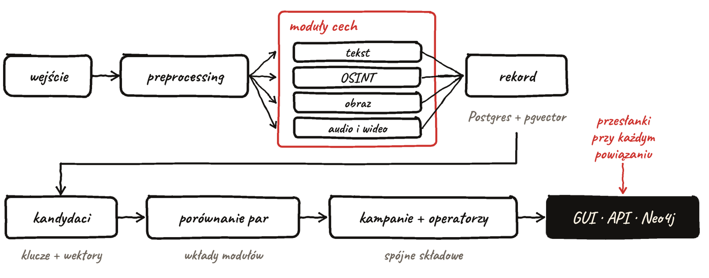
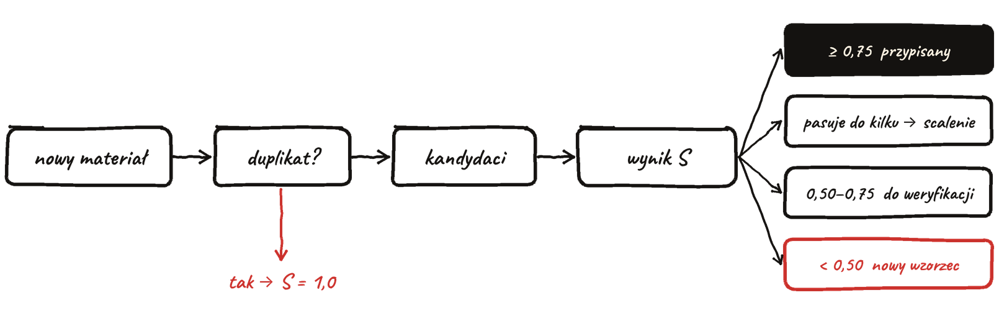

jak pozyskujemy cechy, liczymy podobieństwo i grupujemy materiały w kampanie
Spis treści
01Założenia
02Potok
03Wejście i preprocessing
04Cechy – co liczy każdy moduł
05Rekord materiału i kandydaci
06Podobieństwo pary
07Grupowanie
08Prezentacja wyników i wyjaśnienia
09Niekompletne dane i duplikaty
10Skaner Biblioteki Reklam Meta
11Ewaluacja
12Ograniczenia i rozwój
HackNation 2026 · wyzwanie NASK „Follow the fake”Dokumentacja projektu · 22.11.2026
Dokument opisuje, jak system pozyskuje cechy, liczy podobieństwo i grupuje materiały – zgodnie z punktem 4 treści zadania. Przy każdym kroku podajemy progi i ich źródło, żeby wynik dało się odtworzyć i uzasadnić. Pozostałe dokumenty: INSTALACJA.pdf, KAMPANIE.pdf, LICENCJE.pdf.
01 / Założenia
Do której kampanii należy i dlaczego
Nie oceniamy, czy pojedyncza reklama jest fałszywa. Zgodnie z zadaniem wejście jest podejrzane z założenia (zgłoszenie, materiał z paczki, reklama wybrana przez skaner). Pytanie brzmi: do której kampanii należy, z czym się łączy i dlaczego.
Każde połączenie ma przesłanki zapisane zdaniami („ten sam Pixel Meta …”, „100% wspólnych fragmentów tekstu”). Wynik liczbowy bez przesłanki nie jest pokazywany jako powiązanie.
Dwa poziomy powiązań. Kampania = ta sama treść (artykuł, kreacja, nagranie). Operator = ta sama infrastruktura (piksel, konto reklamowe, kit, serwer) przy różnej treści. Operator łączy kampanie, ale ich nie scala.
Braki nie karzą. Materiał bez strony, nagrania albo tekstu porównujemy tym, co ma. Brakujący moduł nie obniża wyniku – po prostu nic nie dodaje.
Zmienne fragmenty są maskowane. Oszuści podmieniają nazwiska, kwoty i domeny między odsłonami kampanii, więc porównujemy też szkielet tekstu, w którym te elementy zastępują znaczniki.
02 / Potok
Od wejścia do kampanii

Etap
Kod
Wynik
Preprocessing
src/fakecollector/ingest/
Incident: składniki dla modułów, braki, odcisk duplikatu
Moduły cech
src/fakecollector/features/text · osint · image · av
cechy i przesłanki każdego modułu
Rekord
src/fakecollector/record/
podsumowanie, pełne cechy (JSONB), wektory, klucze wyszukiwania
Grupowanie
src/fakecollector/grouping/
pary z wynikiem i przesłankami, kampanie, grupy operatorów
Graf
src/fakecollector/graph/
węzły i krawędzie dla frontu, kopia w Neo4j
Skaner
src/fakecollector/adlib/
reklamy z Biblioteki Reklam Meta wysyłane do analizy
Ewaluacja
src/fakecollector/eval/
metryki jakości względem etykiet
03 / Wejście i preprocessing
Dowolne wejście → składniki dla modułów
Przyjmowane wejścia: adres URL, tekst (SMS, treść reklamy, e-mail), zrzut ekranu, plik HTML/MHTML, zapis ruchu HAR, film i nagranie audio, JSON z metadanymi (np. .info.json z yt-dlp), archiwum ZIP, cały folder przypadku (np. data/DANE/14) oraz dowolna kombinacja tekstu i plików z frontu.
Rozpoznaje rodzaj wejścia po rozszerzeniu i zawartości (np. plik .har bez nazwy, strumień HLS, .ts z wideo zamiast TypeScriptu).
Otwiera link wyłącznie w kontenerze – Playwright/Chromium z mobilnym user-agentem aplikacji Facebooka, HTTPX jako zapas – blokuje adresy prywatne (ochrona przed SSRF) i zapisuje HTML, HAR, zrzut i łańcuch przekierowań. Strona błędu (502, „domain for sale”, Cloudflare challenge) nie zastępuje zapisanych materiałów: status to wtedy dead, a w brakach pojawia się „strona nie działa – analiza oparta na zapisanych materiałach”.
Wybiera tekst według wiarygodności źródła: tekst wpisany > treść strony (HTML > tekst strony > HAR, osobno dla każdej strony) > reklama z Biblioteki > JSON > transkrypcja > OCR. Źródło krótsze niż 15 słów ustępuje następnemu. Popularne domeny (google.com, facebook.com, amazon.com…) znalezione w tekście lub na zrzucie nie są adresem strony oszustów.
Wykrywa duplikaty po odcisku wejścia (hash znormalizowanego tekstu, plików i adresu bez parametrów śledzących). Duplikat dostaje wynik 1,0 z oryginałem i zawsze trafia do jego kampanii.
Zapisuje braki (missing), np. „moduł audio i wideo: brak nagrań”, „strona nie została pobrana”. Front pokazuje je przy materiale.
Moduł
Dostaje składniki
tekst
wybrany tekst materiału i jego źródło (text_origin)
OSINT
adresy, HAR, HTML, JSON
obraz
zrzuty ekranu, obrazy ze strony, klatki filmów (do 12 na film, do 40 obrazów na materiał)
audio i wideo
filmy (także sklejone ze strumieni HLS .m3u8 + .ts), nagrania audio
04 / Cechy
Co liczy każdy moduł
4.1 Tekst · features/text
Cecha
Jak
osoby, marki
słowniki (lexicons/osoby.txt, marki.txt) z odmianą nazwisk
kwoty, procenty, linki, e-maile, telefony
wyrażenia regularne
znaczniki perswazji
6 grup: zysk, pilność, autorytet, tajemnica, sensacja, „wszyscy już zarabiają”
kategoria narracji
połowa: podobieństwo embeddingu do opisów kategorii, połowa: słowa-wskazówki; kategorie: fałszywy artykuł inwestycyjny, skandal, cudowny lek, sklep-wydmuszka, hazard, inne
szkielet
osoby, marki, kwoty, daty, adresy i telefony zastąpione znacznikami <OSOBA>, <KWOTA> …
odciski
SHA-256 znormalizowanego tekstu; MinHash (128 permutacji, shingle 5-wyrazowe) tekstu i szkieletu
embeddingi
paraphrase-multilingual-MiniLM-L12-v2 (384 wym.), średnia z fragmentów po 180 słów
Porównanie – średnia ważona dostępnych sygnałów: MinHash tekstu 0,30, MinHash szkieletu 0,25, kosinus szkieletu 0,20, kosinus tekstu 0,15, słowa kluczowe 0,05, ta sama narracja 0,05; identyczny hash wymusza 1,0. Wspólna osoba sama nie łączy – wiele niezależnych kampanii kradnie wizerunek tych samych celebrytów, więc osoba trafia do przesłanek, nie do wyniku. Pewność zależy od źródła tekstu (HTML 1,0, transkrypcja 0,8, OCR 0,6 × jakość OCR) i długości (poniżej 15 słów proporcjonalnie mniej).
4.2 OSINT – infrastruktura · features/osint
Z HAR, HTML i (opcjonalnie) zapytań na żywo moduł wyciąga pivoty: znormalizowane pary (rodzaj, wartość) z wagą aprioryczną i zakresem – razem 70 rodzajów.
Zakres
Przykłady (waga)
Poziom
identity
domena rejestrowalna (1,0), host strony docelowej (0,9), ID reklamy Meta (1,0)
kampania
operator
Pixel Meta (0,95), GA4/GTM (0,9), konto Google Ads, token weryfikacji domeny Meta (0,95), telefon, e-mail, Telegram (0,9), portfel krypto (1,0), kampania w TDS (0,65)
IP poza CDN (0,6), ten sam certyfikat TLS (0,95), domeny w jednym certyfikacie (0,9), NS, MX, partia rejestracji (0,45)
operator
behavior
rodzina TDS, zestaw bibliotek, generator strony (0,02–0,4)
operator (słabe)
Wzbogacenie (enrich, 16 wątków, budżet 45 s, cache 24 h): DNS (A/NS/MX/TXT/SOA), RDAP/WHOIS domeny (wiek, rejestrator), RDAP IP i ASN, certyfikat TLS, Certificate Transparency (crt.sh). Z nich powstają flagi ryzyka domeny, np. registrar_or_parking_ns, sinkhole_ip, tls_cert_mismatch, likely_taken_down.
Ochrona przed szumem: zasoby kopiowane razem z wyglądem podszywanego serwisu (skrypty Facebooka i Google zapisane z artykułem, favicona Gazeta.pl/TVN24, beacony analityki) są oznaczane jako „vendor” i nie tworzą pivotów kitu. Wkład pivotu jest mnożony przez rzadkość wartości w bazie (IDF: min(1, 1,5 / log₂(df + 1))) – IP Cloudflare'a dzielone przez setki stron samo się wygasza.
4.3 Obraz · features/image
Cecha
Jak
Próg i źródło
hashe percepcyjne
pHash i dHash obrazu i jego środka (80%)
T_p = 4, T_d = 14 bitów – kalibracja na obrazach stron NASK (3570 par kontrolnych, 935 transformacji)
ten sam kadr
punkty ORB + homografia RANSAC
wycięty lub przeskalowany fragment kreacji (np. zrzut z telefonu) – min. 18 zgodnych punktów
wygląd
embedding CLIP ViT-B-32 całego obrazu
kosinus ≥ 0,68 = „podobny wygląd” (najwyższa para różnych zgłoszeń: 0,654 z 48)
elementy szablonu, logo
wycinki (rogi, pasek) oceniane opisami i wzorcami logo; SigLIP 2 ViT-B-16 dla logo
≥ 2 wspólne wyróżniające elementy; progi każdego elementu i marki skalibrowane na 13 kreacjach
ta sama twarz: kosinus ≥ 0,3735; osoba z bazy referencyjnej: ≥ 0,3894 i margines 0,21 nad drugą osobą (sprawdzian „wyjmij jedno” na 19 referencjach + 2 kontrole spoza bazy)
kody QR
odczyt QR (z powiększeniem 2× i 3×)
ta sama treść kodu = silny dowód
deepfake
facetorch (EfficientNet), wynik orientacyjny
tylko informacja, nie łączy materiałów
Dowody obrazu mają siłę (config/obraz.toml, sekcja [dowody]), która mnoży wynik:
Siła
Mnożnik
Dowody
silny
1,0
identyczny plik, ta sama kreacja (zgodne hashe), ten sam kadr, ta sama twarz, ten sam kod QR
średni
0,75
podobny wygląd, wspólne elementy szablonu
słaby
0,35
ta sama znana osoba, wspólne logo – mogą wystąpić w różnych kampaniach
Obrazki obecne w dużej części bazy (logo podszywanego serwisu) nie łączą materiałów. Te same kreacje, zrzuty i klatki to ślad kampanii, a te same obrazy z zasobów strony (zdjęcia w artykule) – ślad operatora. Baza referencyjna osób (data/reference_people/<osoba>/ ze zdjęciami i zrodla.json z licencjami) pozwala nazwać osobę na zdjęciu („na obrazach: Rafał Brzoska”). Wielkość bazy nie jest kluczowa – na demo wystarcza kilka najczęściej podszywanych osób.
4.4 Audio i wideo · features/av
Cecha
Jak
Po co
transkrypcja
Whisper small
treść mowy trafia do modułu tekstu (origin = transcript)
odcisk głosu
SpeechBrain ECAPA-TDNN (192 wym.), średnia z 3-sekundowych fragmentów mowy
ten sam lektor lub sklonowany głos; kosinus 0,55 → 0 i 0,80 → 1, porównanie par nagrań
odcisk dźwięku
pary szczytów widma (metoda Shazama), krok 256 próbek
ta sama ścieżka mimo przycięcia, kompresji, zmiany głośności; ≥ 12 zgodnych par
odcisk obrazu filmu
dHash 64 bity, 2 klatki/s
te same ujęcia; Hamming ≤ 10
napisy z ekranu
OCR 6 klatek
adresy i obietnice wypisane w filmie
metadane
ffprobe
słaba przesłanka (np. ten sam program kodujący; ogólne kodery są pomijane)
1,0przycięta, pomniejszona i przekodowana kopia filmu DANE/5
1,0sam dźwięk, fragment 60 s, MP3 64 kb/s
0,0inny film (DANE/14)
05 / Rekord materiału i kandydaci
Wektor cech, który da się porównać
Każdy materiał zapisujemy w Postgresie z rozszerzeniem pgvector:
Tabela
Zawartość
materials
podsumowanie: źródło, status, tytuł, domeny, osoby (z tekstu i z twarzy), marki, braki, kampania, decyzja analityka
klucze wyszukiwania: domena, URL, SHA-256 tekstu, pasma LSH MinHash tekstu i szkieletu (32 × 4), telefony, e-maile, pivoty OSINT o wadze ≥ 0,5, SHA-256 i pHash obrazów, QR, wybrane hashe odcisku dźwięku
Kandydaci do porównania to materiały, które mają wspólny klucz, mają obraz w odległości pHash ≤ 8 albo ≥ 15 wspólnych hashy dźwięku, albo są najbliżej w przestrzeni wektorów (operator <=> w pgvector). Nie porównujemy więc każdej pary w bazie, a i tak nie gubimy wariantów z innej domeny.
06 / Podobieństwo pary
Jawne łączenie wyników modułów
Każdy moduł zwraca wynik s (0–1) i pewność c (0–1) (grouping/compare.py):
s′ = max(0, (s − szum) / (1 − szum))różne strony oszustów zawsze mają coś wspólnego – wynik poniżej progu szumu nic nie wnosi
w = rzetelność × c × s′wkład modułu
S = 1 − Π(1 − w)jeden pewny dowód wystarcza, kilka średnich się wzmacnia, brak modułu nic nie odejmuje
Moduł
Rzetelność
Próg szumu
Do kampanii liczy się
Do operatora
tekst
1,00
0,25
cały wynik tekstu
–
OSINT
1,00
0,30
tylko pivoty identity (ta sama domena, ta sama reklama Meta)
pivoty operator, kit, infra, behavior
audio i wideo
0,95
0,30
cały wynik
–
obraz
0,90
0,40
kreacje, zrzuty, klatki, twarz lektora
wspólne obrazy z zasobów stron
Wynik operatora:S_op = 1 − (1 − S) · Π(1 − w_infra) – kampania zawsze należy do swojego operatora, a wspólna infrastruktura łączy też kampanie o innej treści.
Reguły przeciw fałszywym połączeniom (z analizy błędów na paczce)
Ślady wszechobecne. Ślad kopiujący się z wyglądem podszywanego serwisu (favicona, CSS/JS, beacony, układ ścieżek, szkielet DOM, rodzina kitu…) obecny w > 30% materiałów (i w > 3, przy bazie ≥ 6) nie łączy. Identyfikatory kont (Pixel, GA4, GTM), katalog kitu, serwery aktora i certyfikaty łączą zawsze – dominujący operator też może być „wszechobecny”.
Wspólna domena łączy w kampanię tylko materiały o tym samym zestawie domen docelowych; przy różnych zestawach (jedna strona z kilku w przypadku) to ślad operatora.
Duplikat (ten sam odcisk wejścia) – wynik 1,0.
07 / Grupowanie
Przypisanie, weryfikacja, nowy wzorzec

Wynik pary
Decyzja
≥ 0,75
ta sama kampania (przypisany)
0,50–0,75
do weryfikacji – materiał trafia do kampanii najbliższego sąsiada, decyduje analityk
< 0,50
brak powiązania; materiał bez żadnego połączenia to nowy wzorzec (kampania z jednym materiałem)
Kampanie = spójne składowe grafu krawędzi ≥ 0,75 (union-find). Przy małym zbiorze to prostsze i lepiej wyjaśnialne niż klasteryzacja gęstościowa (HDBSCAN): każde połączenie wynika z konkretnej pary i jej przesłanek.
Operatorzy (grupy podobnych kampanii) = spójne składowe kampanii połączonych wynikiem operatora ≥ 0,75.
Nowy materiał (POST /analyze) jest porównywany z kandydatami i przypisywany przyrostowo; jeśli pewnie pasuje do dwóch dotąd osobnych kampanii, kampanie są scalane. python -m fakecollector.grouping rebuild przelicza całość.
Decyzje analityka (potwierdź / odrzuć / cofnij) dotyczą par materiałów i przetrwają przeliczenie.
Etykieta kampanii: osoba najczęściej wymieniana w tekstach członków („bohater”) i główna domena, np. „Rafał Brzoska · dorquesio.click (+5 domen)”.
08 / Prezentacja wyników i wyjaśnienia
Dlaczego A i B są razem
Każde powiązanie w GUI ma wynik, wkład każdego modułu i przesłanki zdaniami. Te same dane zwraca API (GET /compare?a=…&b=…, GET /graph), a kopia grafu jest w Neo4j.
Widok
Co pokazuje
Analiza
formularz: tekst, link i dowolne pliki naraz; wynik: status i braki, cechy z modułów, przypisana kampania i najbliższe materiały z przesłankami
Przegląd kampanii
kartoteka kampanii (etykieta, liczba materiałów, domeny, osoby), mapa wszystkich kampanii jako graf 2D (szkic) albo 3D, ostatnie reklamy ze skanera Biblioteki Reklam
Kampania
materiały z miniaturami, graf powiązań, panel „Dlaczego połączone?” z wkładem modułów i przesłankami dla wybranej krawędzi, najmocniejsze powiązania, kampanie tego samego operatora, decyzje analityka
Operator
kampanie o różnej treści ze wspólną infrastrukturą i ślady, które je łączą
Materiał
co w nim jest (moduły, braki, obrazy), tekst, kampania i otoczenie materiału w grafie
Neo4j Browser
ten sam graf do własnych zapytań Cypher (python -m fakecollector.graph sync)
09 / Niekompletne dane i duplikaty
Braki nie zatrzymują analizy
Sytuacja
Zachowanie
strona nie działa
analiza zapisanych materiałów (HAR, HTML, zrzut); w brakach: „strona nie działa”; OSINT dalej daje dane domeny
sam zrzut ekranu
obraz (hashe, wygląd, twarze) + OCR do modułu tekstu; wynik w demo: 0,90 do właściwej kampanii
sam tekst z linkiem
tekst + OSINT domeny; wynik w demo: 0,99 do właściwej kampanii przy niedziałającej stronie
sam film
odcisk dźwięku, obrazu i głosu + transkrypcja + klatki do modułu obrazu
urwany strumień wideo
kawałki .ts sklejane w jeden plik; brakujące zapisane w brakach
ten sam materiał drugi raz
wykryty duplikat, wynik 1,0 z oryginałem
antywirus na hoście blokuje stronę
traktowane jak niedziałająca strona (zob. INSTALACJA.pdf)
10 / Skaner Biblioteki Reklam Meta
Punkty dodatkowe z zadania
Harmonogram: skan co 3 h (reklamy scamowe żyją 0–3 dni), okno 3 dni wstecz, raz na dobę sprawdzenie, czy Meta zdjęła przeanalizowane reklamy (config/adlib.toml).
Zapytania do Ad Library API (kraj PL): frazy typowe dla oszustw („pasywny dochód”, „platforma inwestycyjna”, „lekarze ukrywają”…), frazy wyciągnięte z wcześniejszych trafień i inne reklamy stron-reklamodawców już oznaczonych jako podejrzane.
Filtr wstępny: wynik = 1 − Π(1 − waga) po sygnałach – domena na Liście Ostrzeżeń CERT Polska 0,6, osoba + narracja scamowa 0,45, płatnik, strona udająca media, młoda strona, presja, marki…; próg 0,5 (skan na żywo 1026 reklam: zwykłe reklamy z frazami zysku do ok. 0,45). Do pełnej analizy trafia najwyżej 20 reklam na skan.
Pełna analiza przez ten sam /analyze – reklama z Biblioteki przechodzi identyczny proces jak zgłoszenie od człowieka i trafia do kampanii albo jako nowy wzorzec.
1001reklam w skanie 22.11.2026
984odrzuconych przez filtr wstępny
17przeanalizowanych przez cały potok
co 3 hkolejny skan
11 / Ewaluacja
Pomiar na etykietach
Etykiety: data/labels.csv – kampania (i opcjonalnie operator) dla 25 materiałów z paczki, przejrzane ręcznie (python -m fakecollector.eval run).
Miara
Jak
Punkt walidacji z zadania
precyzja, czułość, F1 par; ARI
pary materiałów i podział względem etykiet
identyfikowanie wariantów tej samej kampanii
„wyjmij jeden”
każdy materiał udaje nowy i jest przypisywany do reszty bazy
przypisywanie nowych materiałów
„wyjmij kampanię”
cała kampania udaje nieznaną – nie może się dokleić
materiały, których nie należy łączyć
ablacja
wynik bez każdego modułu i z samym modułem
przydatność cech, odporność na braki
przegląd progów
F1 i ARI dla progów 0,50–0,95
uzasadnienie progu 0,75
Wyniki: 25 materiałów, 18 kampanii (3 z ≥ 2 materiałami), 300 par.
100%F1 par – 17 dobrych, 0 błędnych, 0 przeoczonych
10 / 10nowy wariant znanej kampanii trafia do niej
15 / 15materiał z nowej kampanii dostaje „nowy wzorzec”
1,0ARI; poziom operatora F1 100%
Ablacja
F1
nowy wariant → dobra kampania
wszystkie moduły
100%
100%
bez tekstu
94%
60%
tylko tekst
100%
100%
tylko obraz
94%
60%
tylko OSINT
11%
20%
bez OSINT / bez obrazu / bez audio i wideo
100%
100%
Wnioski. Tekst i obraz niezależnie odtwarzają ponad 94% powiązań – system działa przy samym zrzucie albo samym tekście. OSINT na poziomie kampanii daje mało, bo oszuści rotują domeny (kampania Brzoski: 6 domen); jego rola to operator (F1 100%). Wynik jest identyczny dla progów 0,50–0,85 – wybrany próg 0,75 leży w środku stabilnego przedziału, więc nie jest dopasowany do danych na granicy.
ograniczenia ewaluacji
Zbiór jest mały (3 kampanie wieloelementowe, 10 przypadków „nowego wariantu”), a jedyny film w etykietach nie pozwala ocenić modułu audio i wideo na parach (moduł oceniono osobno na przerobionych kopiach – sekcja 4.4). Wagi i progi dobrano na podstawie wiedzy eksperckiej i analizy błędów, a następnie potwierdzono pomiarem; przy większym zbiorze etykiet można je dostroić regresją logistyczną na wynikach modułów (kod ewaluacji już liczy potrzebne wkłady par).
12 / Ograniczenia i rozwój
Co dalej
Nazwa produktu jako wejście – krótki tekst bez linku i plików (np. „Kardivix”) jest dziś za krótki dla modułu tekstu. Kierunek: traktować go jako zapytanie do kartoteki (tytuły, teksty, domeny, marki) i do Biblioteki Reklam.
Podobne domeny (typosquatting: goldenflowerspoland.pl / goldenfiowerspoland.pl) nie są dziś porównywane po podobieństwie nazwy – dobry kandydat na nowy pivot.
Wagi modułów – do nauczenia, gdy powstanie większy zbiór etykiet.
Strony za logowaniem (posty na Facebooku) – system pobierze ścianę logowania; potrzebny jest zrzut albo zapis HAR od zgłaszającego.